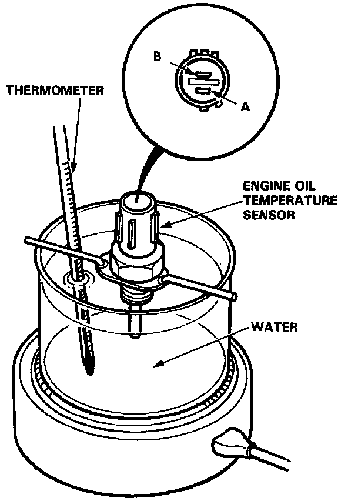
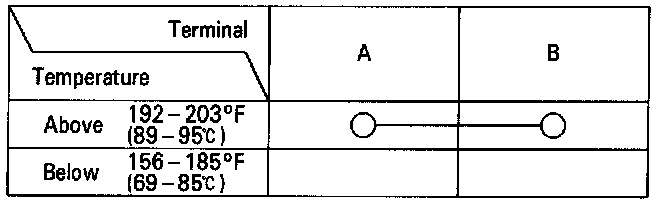

Oil Temperature Sensor/Switch: Testing and Inspection
1. Remove the engine oil temperature sensor from the cylinder head cover.
2. Suspend the sensor in a container of water as shown.
3. Heat the water and check temperature with a thermometer (see table below).

4. Check for continuity between the A and B terminals according to the table.